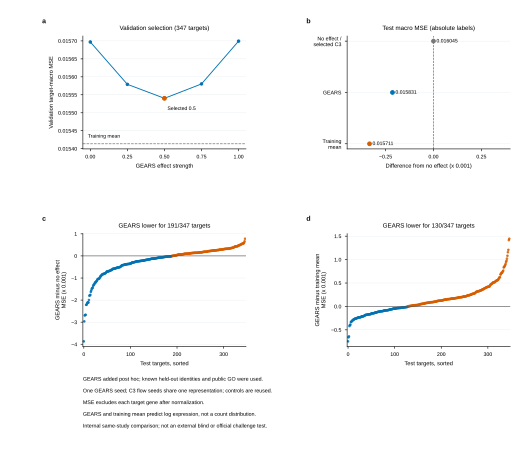
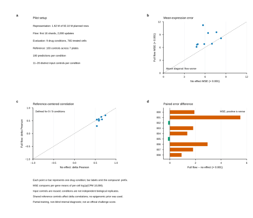
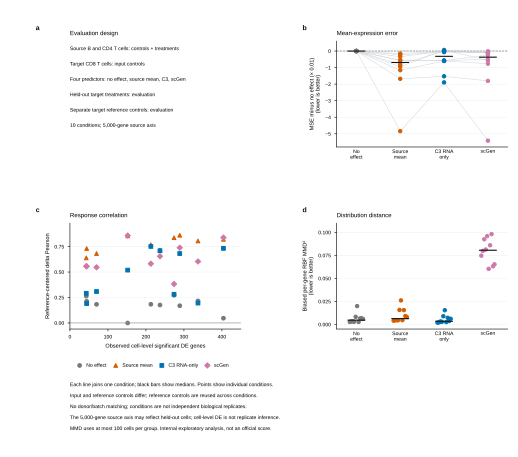
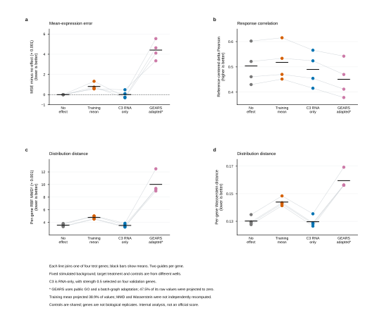
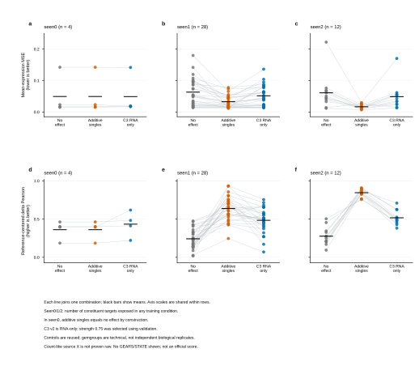
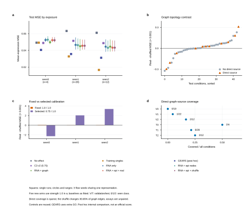
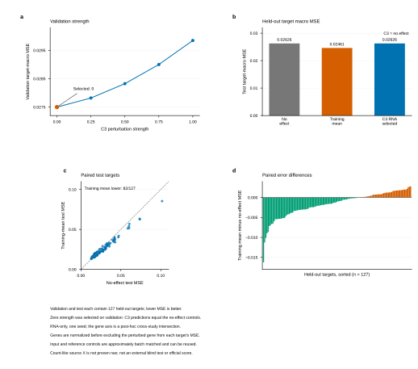
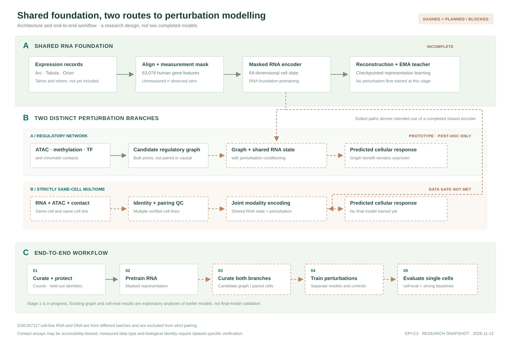
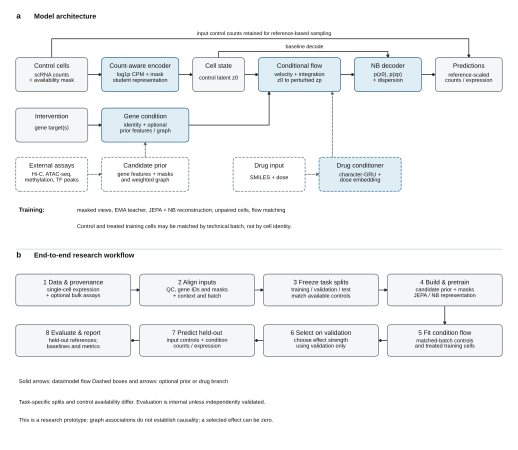

RNA FOUNDATION / STAGE 1未完成
共享表达表征
统一人类基因轴并显式区分未测量与零表达。当前使用四个来源流，按受保护的划分交错训练。
读取快照… 状态记录时间：00 / SHARED FOUNDATION
这是版本发布时保存的静态训练快照，不是实时监控。第一阶段仅覆盖 Arc、整理版 Tabula 和 Orion；尚不能作为完整基础模型使用。
统一人类基因轴并显式区分未测量与零表达。当前使用四个来源流，按受保护的划分交错训练。
读取快照… 状态记录时间：把表观测量汇总为候选基因图，再与共享 RNA 状态和扰动条件结合。既有后验实验尚不能证明图结构提升。
查看独立评分复核 ↗目标是多个细胞系中逐细胞配对的 RNA、ATAC 与接触数据。LiMCA 报告了四个人源细胞系的 RNA 与接触共测，但未证实同一细胞还有配对 ATAC；当前尚未核实至少三个合格三模态细胞系。
查看不配对数据排除证据 ↗ 查看 LiMCA 数据筛选 ↗ 查看 SC-MO-GRN-DB 数据筛选 ↗Tahoe 旧的单来源表征任务与此共享基础模型是不同训练；新版 Tahoe 读取器尚未接入共享训练。记录数不是跨数据集去重后的细胞数，状态不会自动刷新。
新增未训练的基因扰动响应头，将共享 RNA 编码与同一细胞的 ATAC、接触表征融合，再输入扰动基因及抑制或激活方向，输出带测量掩码的逐基因 log1p(CPM) 预测。当前仅为研究原型，并非 STATE，也没有真实数据性能结果。
前向检查要求 RNA / ATAC / 接触身份一致、每细胞有观测接触，并限制使用人类基因轴；元数据一致不证明原始实验真正配对，仍须独立核实来源及矩阵行顺序。完整训练集合须另行验证至少三个细胞系。群体均值损失不把对照与处理细胞虚构成逐一配对；它要求使用同一测量基因面板，并由调用方核实细胞系、条件、数据划分和归一化一致性。CPM 为相对量，排除扰动靶点也不能消除其对文库分母的影响。合成数据优化不代表生物学准确性，群体均值误差也不能替代 cell-eval。
对 14,500 次更新的只读检查点进行重建诊断，并在同一保存检查点上重复得到相同结果；该检查点早于上方 26,250 次更新的状态快照。每个来源仅使用 32 个固定验证细胞；表格比较训练初始与此检查点在遮盖且有检测信号的基因上的误差。
| 来源 | 初始 MSE ↓ | 14,500 次更新 MSE ↓ |
|---|---|---|
| Arc | 0.248550 | 0.228076 |
| Tabula 整理版 | 0.983223 | 0.657850 |
| Orion HCT116 | 0.763615 | 0.175385 |
| Orion HEK293T | 0.505325 | 0.117482 |
误差在 log1p(CPM 10,000) 空间计算。原训练和上表使用完整已测基因的总文库量，其中包含被遮盖基因的计数；因此输入保留了被遮盖部分的总量信息。该检查点四个来源的 64 个潜在维度均有大于 0.1 的样本标准差，但方差存在不等于学到了有用的细胞状态；Arc 和 Orion 的验证并非供体独立。
| 来源 | 完整文库 MSE ↓ | 仅可见文库 MSE ↓ | 潜在表征平均绝对变化 |
|---|---|---|---|
| Arc | 0.228076 | 0.250596 | 0.755 |
| Tabula 整理版 | 0.657850 | 0.634651 | 0.795 |
| Orion HCT116 | 0.175385 | 0.172557 | 0.987 |
| Orion HEK293T | 0.117482 | 0.120975 | 0.896 |
仅可见文库是对原模型的更严格输入消融，不是重新训练，可能带来输入分布偏移；评价目标仍按完整文库计算。其误差变化方向不一致，但潜在表征明显受归一化口径影响。小样本重建不能证明扰动预测、泛化能力或训练已完成。
实验性续训器计划将 Tahoe 合格新记录与此前来源的回放暴露量控制在约 1:1，回放来源按各自合格记录数分配。2026-11-12 16:39:35 UTC 的排队快照显示，它正在等待第一阶段完成并释放训练锁；还需通过检查点、来源哈希、诊断和磁盘空间门控才能启动。
| 来源 | 计划合格记录 | 预检首批记录 | 已测基因特征 |
|---|---|---|---|
| Arc | 108,808 | 48 | 18,080 |
| Tabula 整理版 | 998,796 | 48 | 60,606 |
| Orion HCT116 | 3,260,365 | 14 | 38,606 |
| Orion HEK293T | 4,335,720 | 13 | 38,606 |
| Tahoe | 92,090,669 | 16 | 62,710 |
此次使用实际续训代码构建了五个真实输入流，仅检查首批数值、测量掩码及游标重放，未进行优化更新，也未检查全部表达记录。回放是重复暴露，不是新增独立细胞；批大小不同意味着记录数平衡并不等于梯度或优化步数平衡。此静态快照时尚未进行真实第二阶段训练，仍须评估遗忘、表征质量和未盘点的跨来源重复。
已完整扫描 scPerturbBench 的 KHP 和 CMO 计数层，并对已冻结的候选对照流进行真实数据读取及只读基础模型兼容性检查。两者尚未用于共享基础模型训练。
| 来源 | 训练候选对照 | 验证对照 | 映射基因 |
|---|---|---|---|
| KHP | 9,354 | 32 | 4,992 / 5,000 |
| CMO | 1,419 | 32 | 5,000 / 5,000 |
KHP 已排除全部 23,898 条 CD8T 记录，包含既有评价的输入与参考；CMO 保留一名供体的 4,853 条记录。两者的所有非对照记录暂不纳入；KHP 八个基因名存在歧义而未映射，未测基因不视为表达零。基因面板可能在全数据上选定，跨数据集细胞、供体和药物身份仍未完全核对；只读有限损失不代表预测准确，也未产生训练更新。
GSE303006 的一组小鼠 mESC 样本中，RNA、mESC 质控记录、ATAC 和接触文件有 805 个直接匹配身份。全部 958 个内层文件均已通过 gzip 完整性检查，并完成逐条格式及坐标审计。
| 项目 | 数量或状态 |
|---|---|
| RNA 基因 × 细胞列 | 41,020 × 959 |
| RNA / QC / ATAC 直接身份交集 | 805 |
| ATAC 片段行 | 50,879,408 |
| 超出整数容差的 RNA 值 | 501,341 |
| 含至少一条接触记录的文件身份 | 958 |
| 完整读取并通过 gzip 校验的接触文件 | 958 |
| 首个文件已检查接触记录 | 2,192,041 |
| 全量接触坐标审计 | 完成 · 1,607,375,529 条记录 |
| 805 个匹配身份的接触记录 | 1,406,651,183 条记录 |
| 染色体声明集合 | 2 种 · 是否包含 chrY 不同 |
| RNA / QC / ATAC / 接触身份交集 | 805 |
外层接触归档与全部内层 gzip 的 CRC 均通过完整性检查；本地 SHA-256 仅绑定已下载文件，并非来源提供的独立校验。首个文件的结果不能外推至其余文件；后续全量审计在既定九列格式、声明及 pairs 一基坐标检查中未发现异常。全量共出现两种染色体声明集合，另抽查 51 个文件头发现差异为是否包含 chrY，其全量频率和原因尚未确定。数据生产工具的具体坐标实现仍未独立核实，染色体长度与 mm10 一致不证明参考序列完全一致；审计也不证明接触唯一性、比对质量或实验配对。RNA 的分数值来自作者的多重映射分配，不能静默四舍五入；805 个匹配身份的 ATAC 片段行数均不等于 QC 表的可及性计数，统计口径尚未核实，QC 组蛋白标签与来源说明也不一致。小鼠数据不能直接混入人类基因轴；身份匹配不是实验复现，一组小鼠样本也不满足至少三个细胞系的要求。
SC-MO-GRN-DB 列出 K562 的 ChIP、基因敲除及组合参考网络；它们仅是候选，原始来源、使用许可和与冻结评价的重叠尚未核对，未用于模型训练或评价。
| 目录条目 | 公开目录记录与原研究限制 |
|---|---|
| RN117 / RN118 | K562 目录分别列出 1,435,720 / 236,425 条边；目录数字尚未独立核验。 |
| RN119 · 参考网络 | 完整文件为 29,298 行、26,642 个唯一有向基因对，其中 2,656 对同时标记激活和抑制。 |
| RN119 · 冻结轴对照 | 1,861 基因轴内有 157 个唯一基因对，其中 70 对存在相反标签；与现有 4,141 条候选边的精确有向交集为 0。 |
| DS010 | 原研究分别并行测量 RNA、ATAC 与 Hi-C 并计算整合，未证实三项测量来自同一细胞。 |
| DS011 | 原研究有同细胞 RNA / ATAC，但 Hi-C 来自 bulk 群体，不是同细胞三模态。 |
基因符号仅作区分大小写的精确匹配，未统一别名。相反标签可能来自不同实验，不能静默合并为单一调控方向。RN119 与测试靶点存在重叠但尚未查明原始实验，重叠本身不能证明数据泄漏；该网络未用于训练或评价。目录中多种模态同时出现不意味着逐细胞配对，候选图边也不能自动视为直接因果调控。
新版 GRN 原型损失显式要求对照和处理条件的测量掩码，仅比较共同测量的非靶点基因；这修正了缺失值口径，但不是预测准确度提升或已完成模型训练的证据。
审计了 3,388 个分片的 95,624,334 条来源记录，保护 6,213 个已盘点的历史评估身份；独立代码逐身份复核了重叠计数。
| 筛选步骤 | 记录数 |
|---|---|
| 旧筛选下合格记录 | 92,095,728 |
| 其中受保护的历史评估记录 | 5,027 |
| 另行保留的表征验证记录 | 32 |
| 新版读取器预计训练记录 | 92,090,669 |
这些重叠来自较早的 demo 评价划分；九条件 interim cell-eval 的参考与输入对照在旧筛选下均为零重叠。新读取器在真实批次中排除了受保护记录，但尚未用于共享训练；旧单来源任务及其权重没有被修改。审计只覆盖列出的历史评价，不保证所有跨数据集重复或其他 benchmark 已隔离。
01 / DATA LANDSCAPE
单细胞记录、染色质接触和甲基化测量的单位不同。我们分开呈现数量，并保留缺失与来源限制。
五个来源矩阵的记录数；仅展示已核验矩阵维度的来源。
DATA MODALITIES
仅显示当前能溯源的数值
下载、使用和训练规模是不同概念。以下为离线快照，不会自动更新；链接仅在主动点击时打开。
02 / MODEL SPECIFICATION
参数均从实际检查点重载统计。K562 与 KHP 的基因轴不同；数值只适用于所列配置，不代表各方法的通用规模或性能排名。
MODEL COMPARISON
| 模型 | 对照 / 配置 | 初始化时可训练参数 | flow 优化器参数 | 状态 |
|---|
表中为重建模型时 PyTorch 模块内可训练参数；冻结参数和 buffer 未计入。K562 Epi-C3 有 255,104 个冻结 EMA teacher 参数；KHP Epi-C3 有 656,896 个，并有模块外 64 维条件向量，后者计入 KHP 的 flow 优化器数。Epi-C3 参数含不一定用于推理的 predictor。
共享基础模型的 16,373,966 个可训练构造参数中，16,316,174 个属于第一阶段表征优化器；其余 57,792 个 flow 参数尚未训练。参数审计使用另一个同配置检查点，因此更新次数与上方进度快照可不同。
KHP 的三个模型采用同一案例和基因轴，但架构及训练设置不同；scVIDR 另有未计入表格的两来源回归适配。旧版 scvi 对其非整数表达输入发出警告，该输入遵循本次明确记录的 log1p(CPM) 适配协议。GEARS 使用额外 GO 先验；参数量不是性能指标。
03 / EVALUATION
不同实验使用不同数据、划分与指标。切换查看同一实验内的对照；这些结果不是官方排行榜。
INTERNAL EXPLORATORY RESULTS
347 个测试靶点 · 内部冻结划分
347 个测试靶点、三个共享同一预训练编码器的响应头种子；14,574 条测试逐靶点评分和验证强度网格已从保存的均值独立复算。下表来自已经观察过结果的内部群体均值实验，并非新共享基础模型或盲测结果。
| 方法 | 测试靶点宏 MSE ↓ |
|---|---|
| 真实候选图 | 0.015187105 |
| 打乱候选图 | 0.015193985 |
| 仅表观节点 | 0.015195957 |
| RNA-only | 0.015219835 |
| 训练均值 | 0.015711021 |
真实图减打乱图仅 −0.00000688；194 个靶点真实图误差较低、153 个较高，只有两个测试靶点有直接图源覆盖。打乱对照较弱且样本不构成独立生物学重复，因此不能据此宣称图结构有效。
| 图源靶点 | 候选邻居 | 可评价方向 | 真实图正确数 · 三种子 |
|---|---|---|---|
| SPI1 | 795 | 353 | 193 / 199 / 205 |
| ZNF318 | 19 | 3 | 3 / 2 / 1 |
邻居 MSE 与方向覆盖、正确数等 52 行已独立复算。方向仅在观测变化绝对值至少 0.1 的基因上计算，预测变化包含训练均值基线；ZNF318 仅有三个可评价邻居，不能支持可靠的方向泛化或因果结论。
| 图源靶点 | 候选邻居 | 真实图邻居 MSE ↓ | 打乱图邻居 MSE ↓ |
|---|---|---|---|
| SPI1 | 795 | 0.017085039 | 0.016842428 |
| ZNF318 | 19 | 0.012248853 | 0.011857416 |
这两个靶点的真实图候选邻居 MSE 均高于打乱图；三个种子共享一个编码器，两个靶点也不是生物学重复。邻居按真实候选图定义，结果仅作后验描述，不能推断因果或统计显著性。
对旧的部分训练 Tahoe 模型和无效应基线进行真实单细胞级分析；九个药物条件。使用 cell-eval 0.8.2，不是官方排行榜，也不是新基础模型或两种最终模型的成绩。
| 方法 | 平均表达 MSE ↓ | Delta MSE ↓ |
|---|---|---|
| 旧模型 | 0.011904 | 0.025102 |
| 无效应 | 0.010371 | 0.023368 |
每条件只有 5–10 个独立预测 parent；多个差异表达指标未定义。无效应在这两项误差上较低，不应将未定义指标当作零或模型成功。独立复核了五项表达指标，未重算包内差异表达统计。
图中测试误差按靶点平均；GEARS 使用额外公开 GO 先验和已知留出靶点，是观察原始结果后加入的单种子内部比较。

9 个药物条件的部分训练、非盲测诊断；在 7 个条件中，完整 flow 的均值表达误差大于无效应。输入及参考对照复用，条件不是独立生物重复。

图中为原始四方法的十条件内部比较；目标细胞对照可用且参考对照复用。分数表已与原始汇总核对，但本次图稿审计未独立重算细胞级指标或重新训练模型。

四个留出基因的内部比较，目标和对照来自不同孔且对照被复用；C3 为 RNA-only，GEARS 使用额外 GO 先验及适配。均值误差和响应相关性已从保存预测独立重算，分布距离未独立重算。

44 个留出组合按训练靶点暴露分为 seen0/1/2；图中比较无效应、训练单靶加性基线和 RNA-only C3。均值误差和响应相关性已从保存预测独立重算，但没有重新拟合模型；对照复用，技术组不是独立生物重复。

这是观察测试结果后的内部比较。共同强度下真实图与打乱图的误差差异很小，尚不能证明图先验收益；图仅改变 30.65% 的边，三个 flow 种子共享一个表征模型，表观数据来自未配对 bulk 测量。

127 个留出测试靶点；RNA-only C3 在验证集选择零强度，预测与无效应完全相同。训练均值在 82/127 个测试靶点误差更低；这是单种子、同一文库的内部评估，不是外部盲测或官方成绩。对照可以复用，源矩阵原始计数来源未独立证实。

K562 各臂的输出与无效应相同，不能由此宣称学到了扰动效应。
表观测量主要来自未配对 bulk 数据；弱打乱和少数图源测试靶点限制结论。
不同实验的基因轴、对照和归一化不同；scVIDR 为明确标注的后验适配。
04 / ARCHITECTURE
先训练共享 RNA 表征，再分别开发调控网络和同细胞联合编码分支；虚线表示待完成步骤，并非已经训练或验证的模型。


05 / PROVENANCE
网页依据 v30 工作稿、冻结实验和注明范围的审计整理。研究仍在进行，未经外部独立验证，不应视为完整模型发布或投稿结论。
参数统计来自对四个 K562 模型臂、各三个种子的严格检查点加载；构造时参数量与 flow 阶段优化器参数分开计算。浏览器中所有数据均为本地静态快照，不会连接服务器。
查看 Tahoe 表征训练状态快照 JSON ↗（独立于较早的数据快照审计）
查看共享基础模型状态快照 JSON ↗（2026-11-12 17:11:31 UTC；未完成）
原始单细胞数据不包含在本网页中。数据资源和论文链接仅供用户主动访问；不同来源的数据许可和访问限制应分别审查。